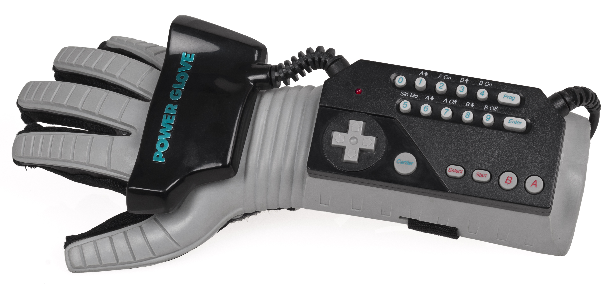

Home

Practica 3
NFS: Guatemala's Most Wanted
Prototipo de guante estilo Power Glove de Nintendo, capaz de controlar
el movimiento del automovil dentro del video juego. [Pro-tip] Evita chocar con la
competencia y los bordes.
Integrantes del Grupo 2
Sergio Lenin Gonzalez Solis
Julio Roberto García Escalante
José Pablo Colindres Orellana
Carlos Manuel García Escalante